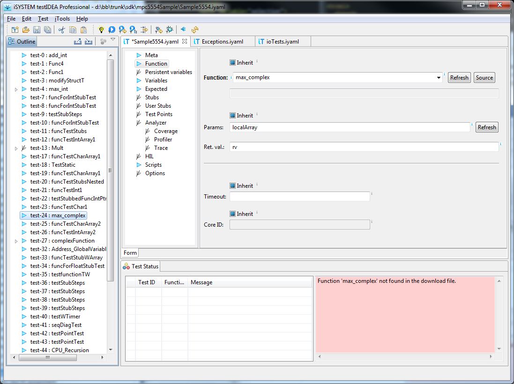

Verification of test specifications
It can happen, that we mistype function or variable name in test
specification, or that it is renamed in source code. Wrong number
of function parameters can also result in invalid test result or
even target crash. To discover such problems before running tests,
a new command iTools | Verify symbols has been added to
testIDEA. Problems are shown in the status view. By double
clicking the problem line in the status view, we can select test
specification related to the problem.

Most problems are displayed in the status view already during
editing of test specifications.